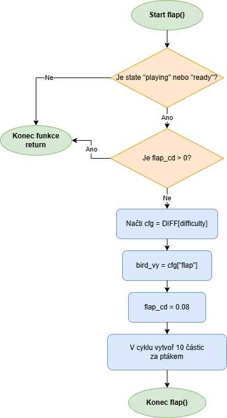
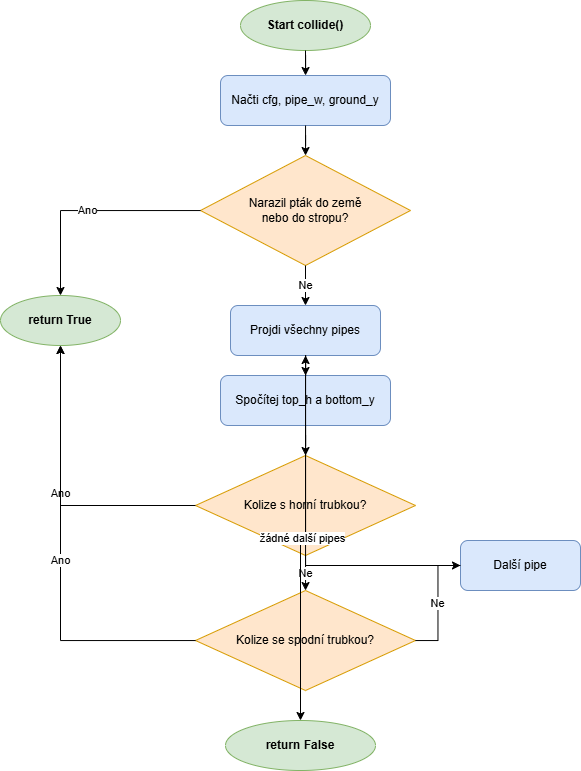
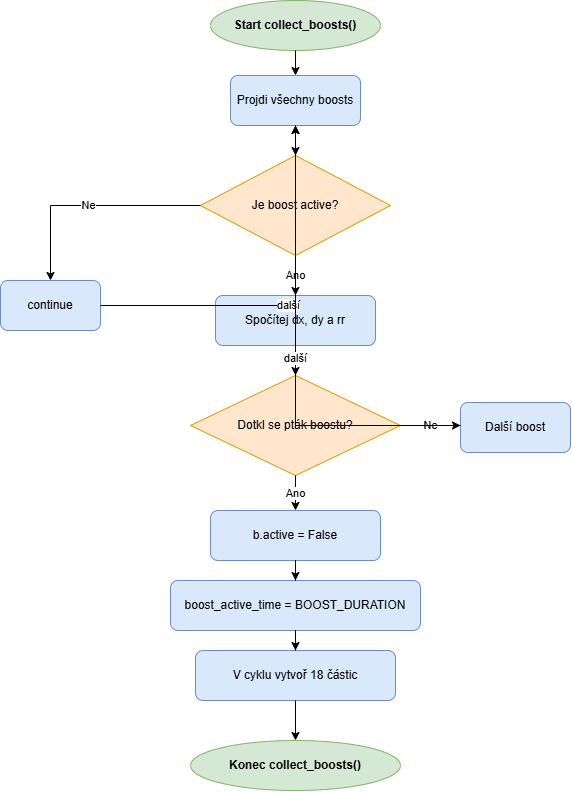

Tato stránka obsahuje vývojové diagramy vybraných funkcí ze hry Flappy Bird. Diagramy ukazují logiku zpracování jednotlivých částí programu.
Diagram ukazuje logiku skoku ptáka. Kontroluje stav hry, cooldown a následně nastaví rychlost skoku a vytvoří částice.

Diagram ukazuje kontrolu kolize ptáka se zemí, stropem a trubkami.

Diagram ukazuje logiku sbírání boostu, aktivaci časovače a vytvoření vizuálního efektu.
